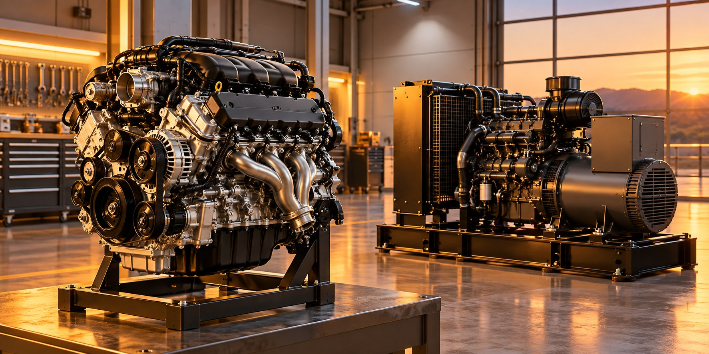

Vehicle engines
Consider fuel use alongside distance, traffic, driving pattern, load and the condition of the vehicle.

Engines convert fuel into mechanical work. Engine-driven generators turn that work into electrical output.
Neipclova approaches these systems through practical application experience, considering the source fuel, conversion equipment and useful output together.
Consider fuel use alongside distance, traffic, driving pattern, load and the condition of the vehicle.
Examine fuel use against operating hours, mechanical duty and comparable output.
Compare fuel quantity with delivered electrical energy at similar loads and conditions.
Servicing, filters, cooling, load matching and normal equipment condition are part of the assessment. A claimed efficiency change should be separated from changes in these factors.
Fuel Bar suitability must be confirmed for the specific application. No blanket installation recommendation or universal benefit is stated.
How energy connects across this field.
LET’S MAKE ENERGY WORK BETTER